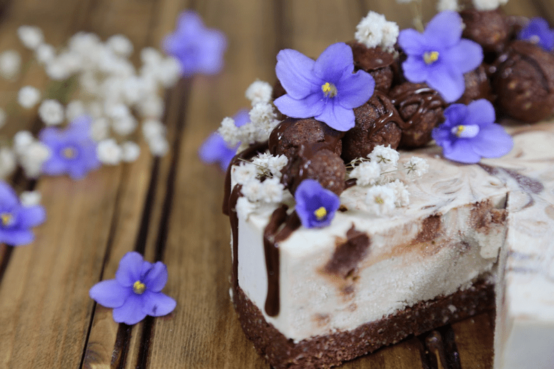
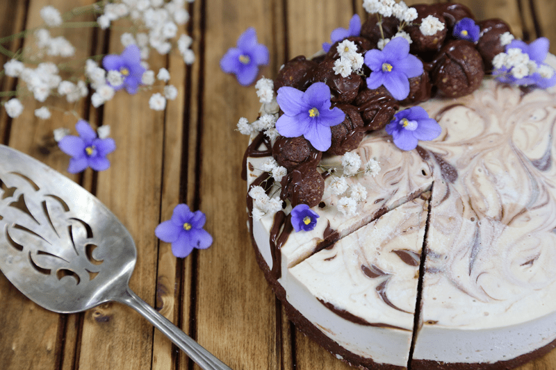

White Chocolate Caramel Cheesecake
~ raw, vegan, gluten-free ~
This recipe looks longer than what it is. There are a few components that you will need to make prior to the cheesecake, but it is well worth any and all effort. Read through the recipe below before you begin.

I got a late night email last night from my dear friend Gina. She asked me if I would be interested in making a raw dessert for a gathering that was taking place the next day. I happily told her that I would love to. She had invited my husband and me to a documentary viewing of the film: The Dark Side of Chocolate. I highly recommend watching this film. It is a real eye-opener. In honor of the subject… chocolate, I was inspired to make this cheesecake.

This is a great dessert to make with little ones. They would have a lot of fun squeezing the sauces into the cake or even helping with the swirl effect. It’s so important to teach them young to appreciate whole foods.
 Ingredients:
Ingredients:
Crust:
Caramel:
- 1/2 cup raw almond butter
- 1/2 cup maple syrup
- 1/2 cup date paste
- 2 tsp vanilla extract
- 1/8 tsp Himalayan pink salt
Chocolate Ganache:
- 3/4 cup maple syrup
- 3/4 cup cocoa powder or raw cacao powder
- 1/3 cup virgin coconut oil, melted
- 1/8 tsp Himalayan pink salt
Cheesecake batter:
- 3 cups soaked cashews, soaked 2+ hours
- 2 cups almond milk
- 3/4 cup maple syrup
- 3 Tbsp fresh lemon juice
- 1 tsp liquid vanilla
- 1/4 tsp Himalayan pink salt
- 3 Tbsp powdered sunflower lecithin
- 1/4 cup coconut oil, melted
- 1/2 cup melted raw cacao butter
Preparation:
Crust:
- Assemble a Springform pan with the bottom facing up, the opposite way from how it comes assembled.
- This will help you when removing the cheesecake from the pan, not having to fight with the lip.
- Wrap the base with plastic wrap. This will make it easier to remove the pie when done… unless you plan on serving the cake on the bottom of the pan.
- In the food processor, fitted with the “S” blade, pulse the almonds into small pieces.
- Be careful that you don’t over-process the nuts and head towards making a nut butter. Nothing wrong with that… just not our goal at the moment.
- Add the cacao powder and salt, pulsing it together.
- This ensures that the dry ingredients (spices) get well distributed so you don’t end up with concentrated pockets of flavors.
- Add the date paste and vanilla. Process until the batter sticks together.
- Depending on your machine, you may need to stop the unit and scrape the sides down during this process.
- Test the batter by pinching it between your fingers. If it holds, it is ready.
- Distribute the crust evenly on the bottom of the pan, using even and gentle pressure.
- If you press too hard it might really stick bad to the base of the pan, making it hard to remove slices.
- You can either just make the crust on the bottom of the pan or you can also bring it up the sides. It is up to you.
- Set aside while you make the cheesecake batter.
Caramel sauce:
- In a high powered blender, combine the almond butter, sweetener, date paste, vanilla, and salt. Process until smooth.
- Transfer to squeeze bottle and set aside.
Chocolate Ganache:
- In a high powered blender, combine the sweetener, cacao powder, coconut oil, and salt. Blend until smooth and turns to a glossy sheen.
- Transfer to squeeze bottle and set aside.
Filling:
- Drain the soaked cashews and discard the soak water. Place in a high-speed blender.
- In a high-powered blender combine the; cashews, almond milk, sweetener, lemon juice, vanilla, and salt.
- Due to the volume and the creamy texture that we are going after, it is important to use a high-powered blender. It could be too taxing on a lower-end model.
- Blend until the filling is creamy smooth. You shouldn’t detect any grit. If you do, keep blending.
- This process can take 2-4 minutes, depending on the strength of the blender. Keep your hand cupped around the base of the blender carafe to feel for warmth. If the batter is getting too warm. Stop the machine and let it cool. Then proceed once cooled.
- You can use a different liquid sweetener if you are not comfortable with agave. Just be aware of the different flavors and colors that the sweetener might impart in the cake.
- With a vortex going in the blender, drizzle in the coconut oil, cacao butter, and then add the lecithin. Blend just long enough to incorporate everything together. Don’t over-process. The batter will start to thicken.
- What is a vortex? Look into the container from the top and slowly increase the speed from low to high, the batter will form a small vortex (or hole) in the center. High-powered machines have containers that are designed to create a controlled vortex, systematically folding ingredients back to the blades for smoother blends and faster processing… instead of just spinning ingredients around, hoping they find their way to the blades.
- If your machine isn’t powerful enough or built to do this, you may need to stop the unit often to scrape the sides down.
Assembly:
- Pour the batter into the prepared pan.
- Gently tap the pan on the counter to remove any air bubbles.
- Holding a squeeze bottle upright, press the tip down into the filling, gently squeeze, but don’t release the squeeze until you withdraw it from the cake, leaving a little puddle on top.
- Do this randomly all over the cake.
- Do this with both the caramel and chocolate.
- You don’t have to use it all up, in fact, it is nice to have extra to drizzle over each slice being served.
- Take a skewer stick and drag it through the caramel and ganache, gently swirling it into the filling. Be careful that you don’t disturb the crust.
- Chill in the freezer for 4-6 hours and then in the fridge for 12 hours.
- Store the cheesecake in the fridge for 3-5 days or up to 3 months in the freezer. Be sure that they are well sealed to avoid fridge odors.
© AmieSue.com